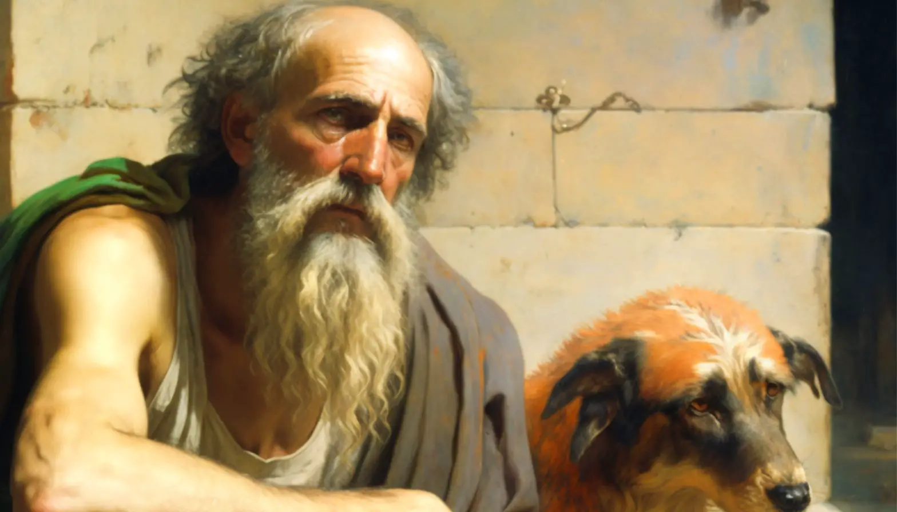

Diógenes de Sinope foi um filósofo grego do século IV a.C., conhecido por seu estilo de vida simples e sua busca pela honestidade e autossuficiência.
Diógenes de Sinope, também conhecido como Diógenes, o Cínico, foi um dos fundadores da escola filosófica cínica. Ele rejeitava as convenções sociais e buscava viver de acordo com a natureza humana, vivendo de forma simples e honesta. Sua famosa anedota de procurar um homem honesto na luz do dia exemplifica sua crítica à hipocrisia e falsidade da sociedade. Embora pouco de sua obra tenha sobrevivido, seu estilo de vida e suas ideias influenciaram muitos filósofos posteriores.
Experiência Profissional
- Vida como um filósofo cínico e asceta.
- Ensinamentos e práticas de vida em Atenas
- Sua busca por honestidade, autossuficiência e liberdade.
Habilidades e Especialidades
- Pensamento filosófico crítico.
- Estilo de vida simples e desapegado dos bens materiais.
- Abordagem provocativa e irônica para questionar as convenções sociais.